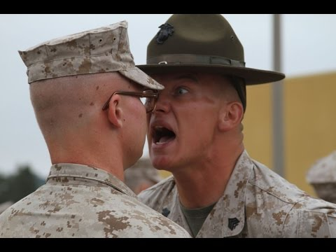
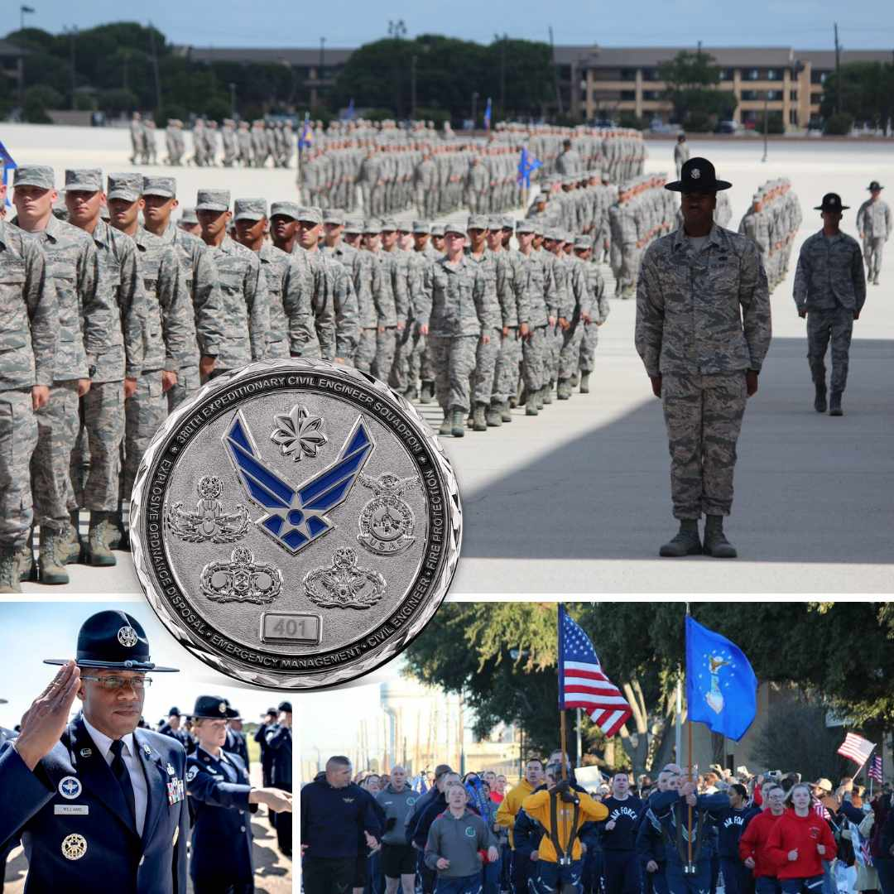
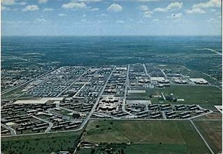

Air Force Training


United States Air Force Basic Military Training (also known as BMT or boot camp) is an
eight-week program of physical and combat training required in order for an individual to become
an enlisted Airman in the United States Air Force.
It is located at Lackland Air Force Base in San Antonio, Texas.
